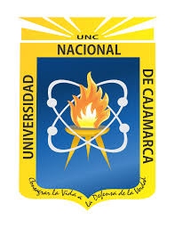

Bienvenidos al Curso de IWEB
Mis Imágenes
Mis Servicios
Proyecto Carta
Práctica Calificada
El mundo de la Ingenría de Sistemas
Un blog sobre la temática de la Carrera de Sistemas de UNC
Inicio
Contactos
Acerca
Servicios
Lenguajes de Programación
JAVA
C++
Java Script
C#
Enviar Correo Electrónico
